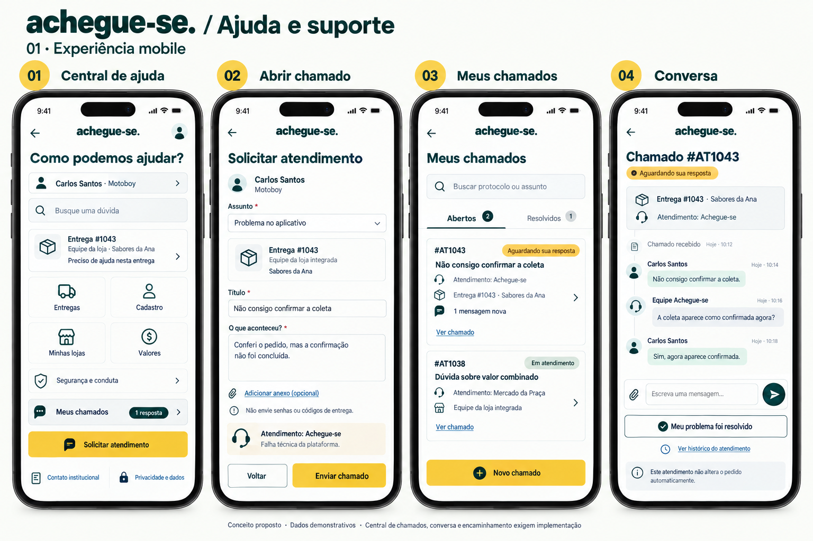
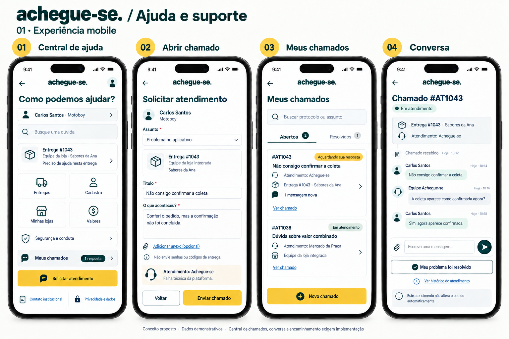
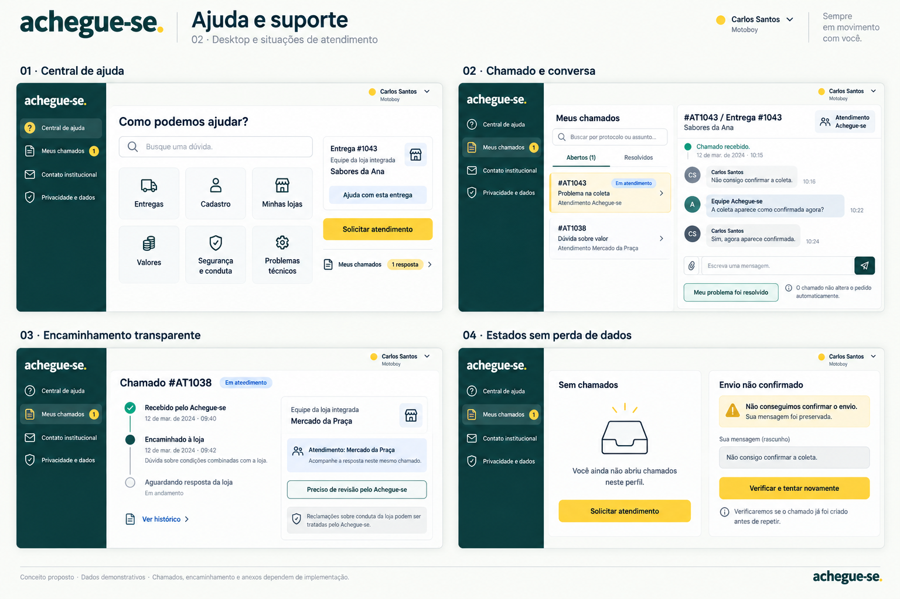
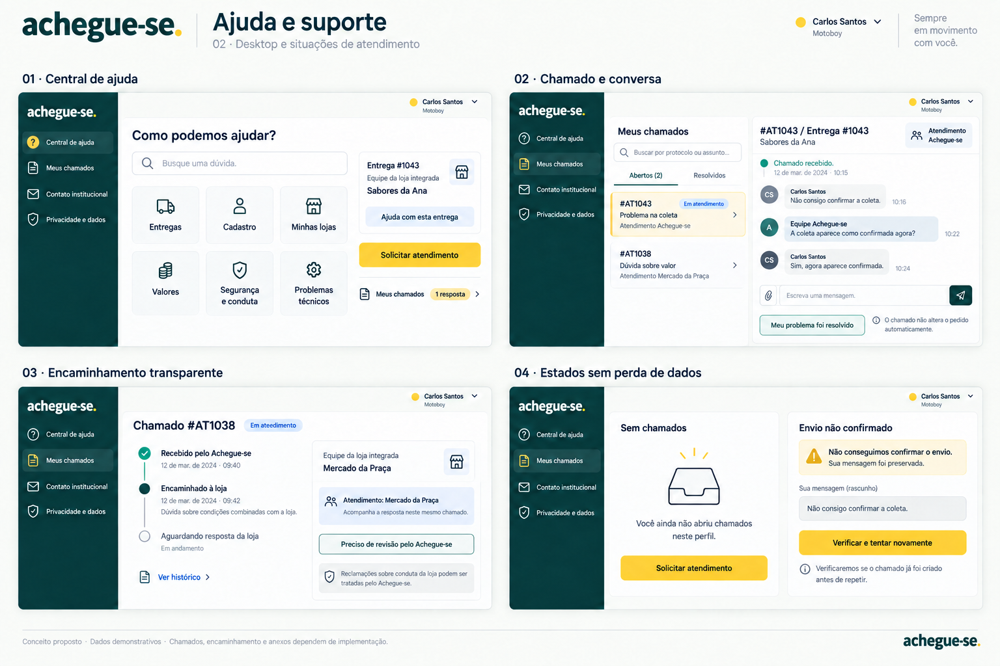

← CatálogoAjuda e suporte
Central, chamados, conversa, encaminhamento e erros. Não inventar atendimento humano ou SLA inexistente.
Documento da página · Registro da revisão

055-suporte-mobile-inicial · Histórico — não aplicar automaticamente
056-suporte-mobile · Referência para revisão
057-suporte-desktop-inicial · Histórico — não aplicar automaticamente
058-suporte-desktop · Referência para revisão